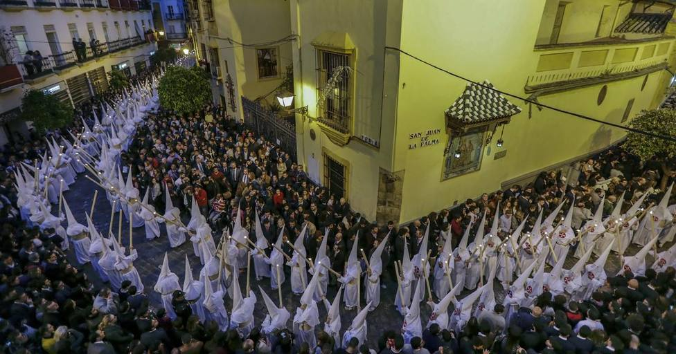

La Semana Santa es la fiesta grande de Sevilla. Una celebración que alcanza una intensidad, tanto estética como espiritual, única en su estilo. Declarada Fiesta de interés turístico Internacional.
Entre el Domingo de Ramos y el de Resurrección salen a la calle cerca de sesenta cofradías que dan vida a la pasión y muerte de Cristo. Es de gran tradición que a las distintas cofradías, en diferentes partes del recorrido, se les cante un palo del flamenco llamado saeta.
Considerada como auténtico arte, a la par que motor de un profundo sentimiento espiritual, la Semana Santa en Sevilla constituye un fenómeno complejo y, en ocasiones, paradójico. La causa de esto es un fenómeno auténticamente popular en el que participa el pueblo entero, sin distinción de clases, pero que es a la vez religiosa y artística, seria y jubilosa, sencilla y voluptuosa.
En definitiva, la Semana Santa sevillana no es sólo una fiesta católica con más de cuatrocientos años de tradición, sino la síntesis de toda una cultura centrada en el placer de los sentidos y la esencia del ser humano.
Su celebración tiene lugar, según el año, entre marzo y abril.
La Feria de Abril o Feria de Sevilla es una fiesta de primavera que se celebra anualmente en la ciudad de Sevilla, donde el público se reúne en un gran recinto denominado Real de la Feria, denominación usada
por ser fundación real de Isabel II, con calles con casetas efímeras, engalanadas con farolillos, por las que circulan jinetes y coches de caballo y por las que pasan diariamente unos 500 000 visitantes.
Se celebra una o dos semanas después de la Semana Santa. Tiene un gran impacto económico y social en la ciudad y está declarada Fiesta de Interés Turístico Internacional.